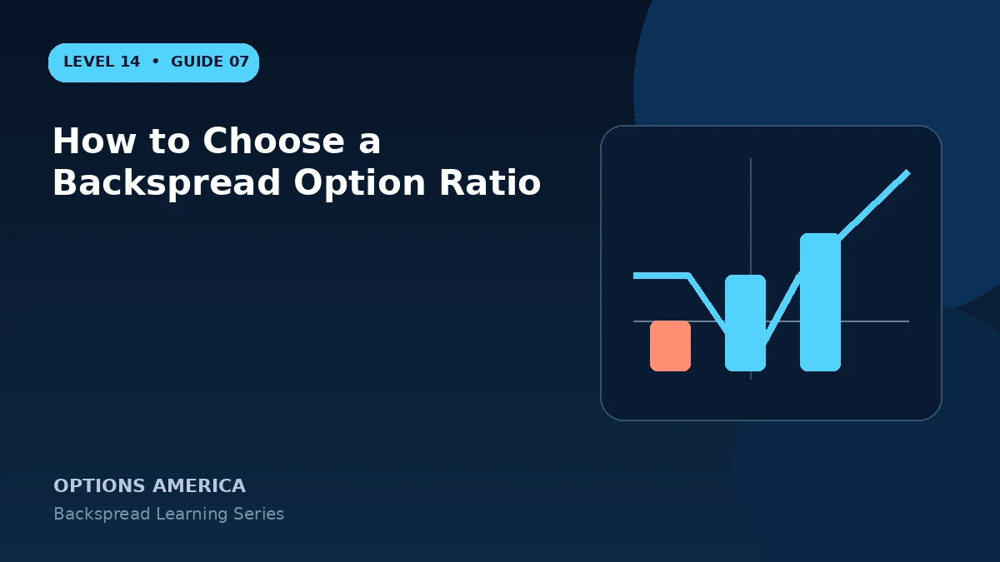

Compare 1-by-2, 1-by-3 and other backspread ratios through debit, gamma, vega, delta and maximum loss.
The common 1-by-2
Selling one option and buying two creates one net long option beyond the long strike. It is the simplest backspread ratio and provides a clear payoff for analysis.
Higher long ratios
Buying three or more options can create stronger gamma and vega but usually requires more debit. The position may lose on the quiet side and can become highly sensitive to volatility changes.
Contract multiplier and scale
A ratio describes relative quantities, not position size. A 5-by-10 position has the same ratio as 1-by-2 but five times the exposure, costs and assignment complexity.
Broker and liquidity limits
Confirm margin treatment and that all strikes can fill in the intended ratio. Body-leg slippage and partial fills can leave uncovered short exposure.
A practical example
A 1-by-2 call backspread costs $0.10, while 1-by-3 costs $2.40. The additional long call improves far-upside convexity but creates a much larger quiet-side debit loss.
This simplified example focuses on selected expiration outcomes; live prices and risks will differ. Live option prices also reflect the underlying price, time decay, rates, dividends, liquidity and transaction costs. Greeks are theoretical estimates, not guarantees.
Turn the payoff into a trading plan
Before entering how to choose a backspread option ratio, write down the stock price, both strikes, expiration, contract ratio and total opening credit or debit. Then calculate the quiet-side result, maximum loss at the long-option strike and the far-move breakeven. These three checkpoints make the position easier to monitor and help prevent the attractive tail payoff from hiding the loss valley.
Test at least five scenarios: no move, a move to the short strike, a move to the long strike, a move to breakeven and a move well beyond breakeven. Repeat the exercise with implied volatility higher and lower and with less time remaining. The resulting range is more useful than a single payoff line because a live backspread can change substantially before expiration.
Finally, define the catalyst, maximum acceptable loss, review date and closing method in advance. Use one multi-leg order whenever possible, confirm every fill and recalculate the remaining position before changing any leg. Assignment, liquidity and transaction costs belong in the plan even when the expiration loss appears defined.
Frequently asked questions
Is a higher ratio safer?
No. It changes cost and exposure rather than universally reducing risk.
Does 2-by-4 differ from 1-by-2?
The payoff shape is scaled to twice the size.
Why check margin?
Broker treatment can change with ratios and fills.
Continue the Backspread Strategies cluster
Explore related guides: How to Choose Backspread Strikes · Backspread Greeks: Delta, Gamma, Theta and Vega · Backspread Options Strategy Explained. For a structured sequence, use the free Level 14 – Backspread course.
Options involve risk and are not suitable for every investor. This material is educational and is not investment, tax or legal advice. Greeks are theoretical estimates, and contract terms and broker requirements can vary.